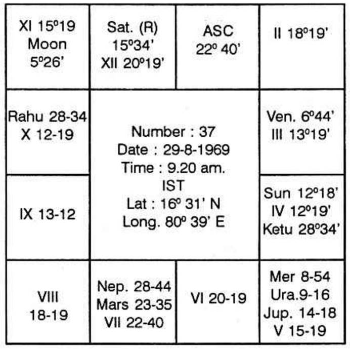
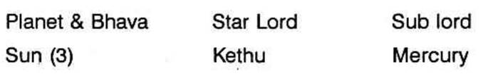
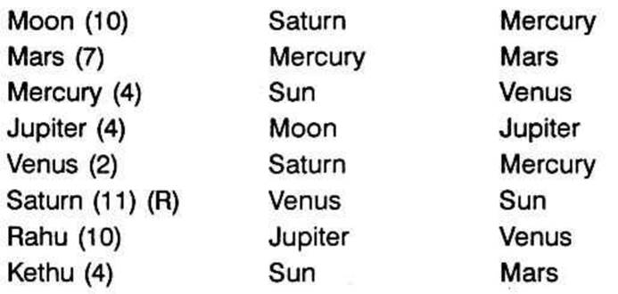

A popular person, hoping to become a minister, anxiously puts the question “Will I be selected as a minister? I give number 37 for your analysis by Krishnamurti Padhdhati”.
The question is taken up on 29-8-1969 at 9.20 A.M. IST at Lat. 16°31' N and Long. 80°39' E.
Number 37 implies that the horary ascendant is Taurus 22°40' on the nirayana zodiac. The sayana lagna is, therefore, Gemini 16°0', since Krishnamurti ayanamsa for 1969 is 23°20'. From Raphael's Tables of Houses, we find that the other sayana cusps at the Lat. 17°N are:
2 Cancer 11°39'
3 Leo 6°39'
4 Virgo 5°39'
5 Libra 8°39'
6 Scorpio 13°39'
Adding 6 signs to each of the above, we get the cusps for the other 6 houses. Since we require nirayana cusps, we should deduct 23°20' from each of the above values. The following chart shows the complete horary nirayana map of the Heavens at the moment of analysis.
Nirayana Horary Chart



Rahu represents……………………Saturn
Ketu represents……………………Sun
Analysis: - Moon in 10 in the star and sub of Saturn, lord of 9 and 10 in 11 shows the mind of the querist concentrated on political success.
According to Krishnamurti Padhdhati, Jupiter, Mercury, Mars and Saturn signifying houses 1, 6, 9, 10, 11 indicate political prosperity and also ministership.
In the chart, lord of 1 and 6, Venus in 2 in the star of Saturn, lord of 9 and 10 in 11 and sub of Mercury, lord of 2 and 5 in 4. Hence Venus promises success.
Lord of 11 Jupiter is in the star of Moon, who is occupant of 10 and sub of Jupiter himself. Jupiter therefore promises success.
Saturn, lord of 9 and 10, is in 11 in the star of Venus, lord of 1 and 6 and sub of Sun, occupant of 3. So, Saturn provides positions of confidence.
Mars owns 7 and 12 and is in 7. He is in the star of Mercury in 4 and sub of Mars himself. Therefore, Mars is not well placed for political prosperity.
The meridian falls in the star of Rahu and sub of Saturn. Rahu is in Saturn's sign and so represents Saturn. Since the sub lord of the 10th cusp, Saturn is retrograde, the result will be negative inspite of apparently favourable development.
The querist need not entertain any hope of becoming a minister, even though he will enjoy popularity and prosperity.